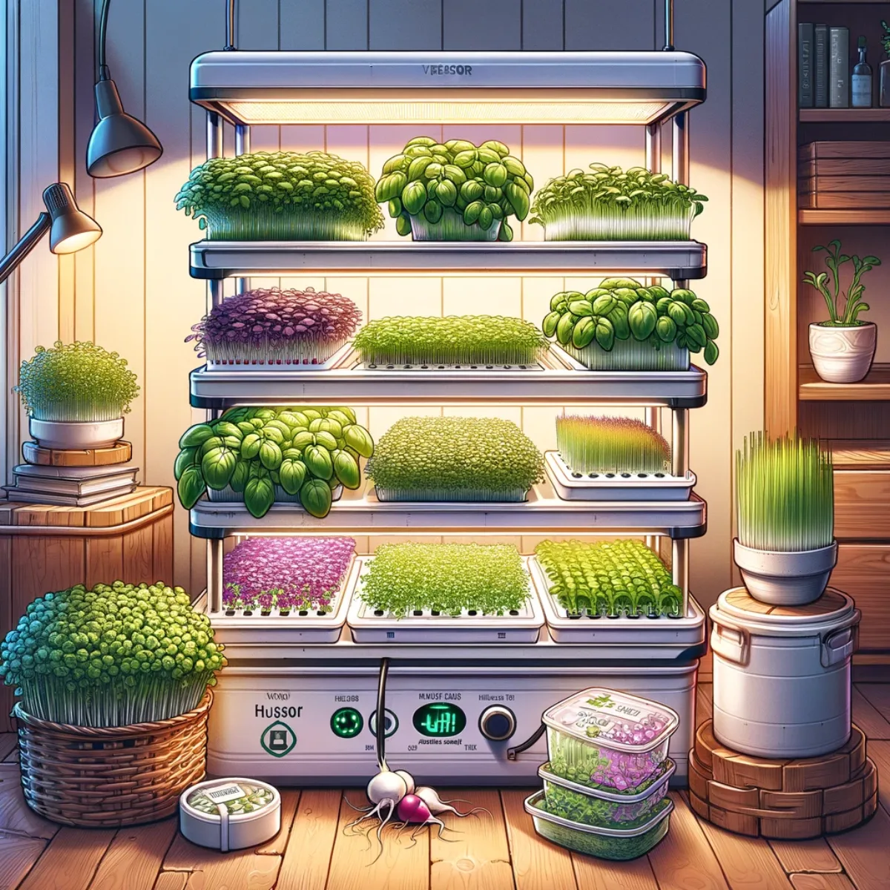
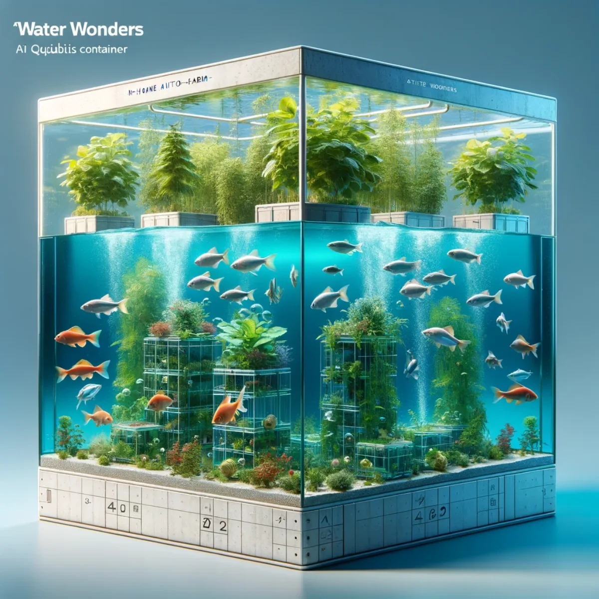
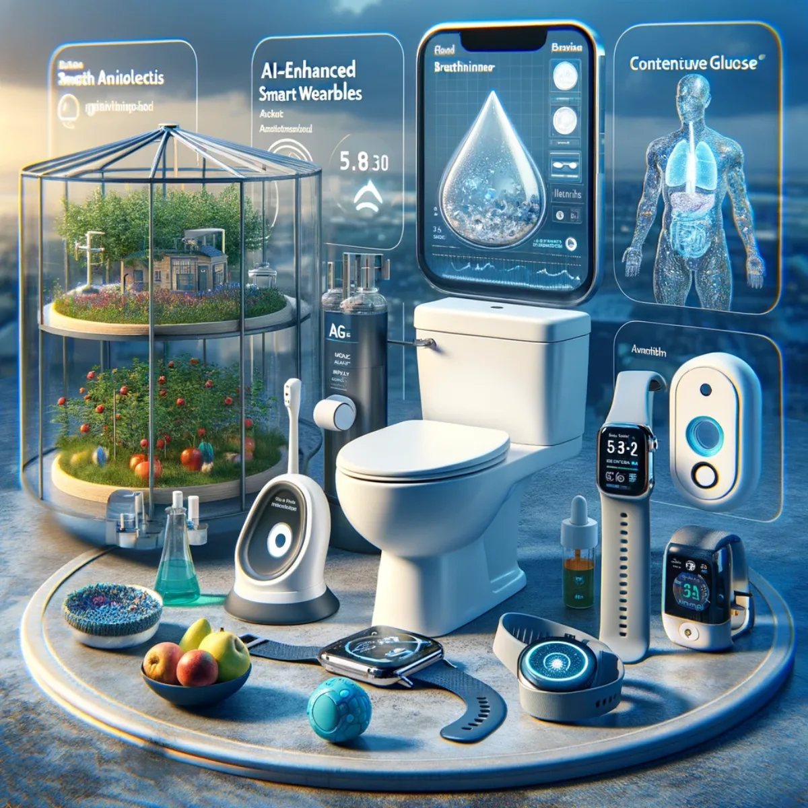

Pathways / Frontiers
In-Home A.I. Auto-Farm
An in-home food system you build and own, with AI you shape rather than rent. It grows fresh, nutrient-rich food year round, learns your household's health, and keeps your data yours.

Harvest at home with A.I: high-tech, high yield, year round
Climate-Proof Food Security
In an era of climate uncertainty, the In-Home A.I. Auto-Farm is something you build and own rather than a service you subscribe to, and that changes what food security means: it belongs to your household, not to a provider.
The idea is simple. Cubic metres of space in your home, tended by AI you shape to your family rather than rent from big tech, growing a diverse array of crops whatever the weather or the wider world is doing. It isn't only about growing food; it's about a system that stays yours, learns your household, and grows more capable as you do, making every home its own quiet stronghold against the climate crisis.

Mist magic: nourishing nature, no soil required
Aeroponics: Sky-High Harvests
Aeroponics, the future of farming, suspends plants in air and mists their roots with nutrient-rich solutions. This soil-less approach saves water and space and speeds growth, which makes it ideal for homes and cities. Sky-High Harvests brings those cloud gardens indoors, a glimpse of a future where greenery can thrive wherever you want it.
In your Auto-Farm it gets precise, data-driven care from AI you tune to your household rather than rent, adjusting conditions to the feedback it reads and the nutrition you actually need. Because the model is yours and learns your family over time, each plant pulls its weight in your diet, and the health data behind it never leaves your hands.

Small sprouts, superpowers: eat micro, think macro
Microgreens: Tiny Greens, Giant Nutrition
Tiny Greens, Giant Nutrition is the powerhouse world of microgreens. Packed with flavour and nutrients, these miniature plants prove that great things come in small packages. Quick and efficient to grow, they're a sustainable, space-saving way to meet real nutritional needs in compact homes.
Grown in an AI-managed environment you own, conditions are fine-tuned for growth and nutrition. Reading health data from your own wearables, data that stays with you, the system matches microgreen varieties and nutrients to each person in the household, and keeps refining that match as your needs change, making each bite a step towards longevity and vitality.

Mushroom majesty: unearth nature's hidden treasures
Mushrooms: Fungi Fantasia
Fungi Fantasia explores the world of edible mushroom cultivation. A cornerstone of your Auto-Farm, it shows how diverse fungi can be grown in controlled conditions for a year-round, sustainable source of food, and how much untapped potential there is for a long and healthy life.
Folded into your nearly closed-loop system, mushrooms turn the by-products of other parts of the farm into new growth, a small circular economy running under your own roof. That cuts waste and gives your household medicinal and nutritional benefits, all managed by a system you own and shape rather than one you rent.

Creepy crawly cuisine: the future of feast
Insects: Buzzing with Protein
Buzzing with Protein opens up the eco-friendly, nutritious world of insect farming. As a viable protein alternative, insects like crickets and mealworms are raised with very few resources, easing the wider protein-supply challenge. It's a look at how such tiny creatures can play a giant role in what we eat.
These tiny protein factories show what a system you own can do: turning organic waste into high-quality nutrients. That protein can feed people, cooked, dried or powdered, or feed the fish and animals elsewhere in your ecosystem, each part quietly supporting the next.

Aqua abundance: where fish and plants thrive together
Fish Aquaponics: Water Wonders
Water Wonders looks at the symbiosis in fish aquaponics, where fish waste feeds plants and plants clean the water for fish. This self-sustaining cycle produces both fresh produce and fish, an eco-conscious way of farming that brings the harmony of aquatic life and agriculture into your own home, run by AI you shape.
The cycle carries your farm's closed-loop philosophy, needing few outside inputs and wasting little. Tuned to your household's own health data, held privately, it makes sure both fish and plants deliver the nutrients you actually need, and keeps adjusting as your wellbeing and household change over time.

Feathered friends: farming with flair and care
Chicken Husbandry: Cluck and Harmony
Cluck and Harmony brings a humane approach to keeping chickens within your Auto-Farm. It puts ethical care, space and natural behaviour first, looking after the birds while providing fresh eggs and, for the omnivores, meat. It's a picture of how technology and compassion can sit together in modern farming.
Inside your Auto-Farm the chickens close another loop: plant waste and insects become feed, and their manure tops up the nutrients in the water that feeds the plants when fish waste alone isn't enough. Nothing is wasted, and the whole balance is run by a system you own rather than rent.

Wearable wisdom: your health, A.I's harmony
AI-enhanced Smart Wearables: Health at Hand
Health at Hand is where AI-enhanced smart wearables help you watch and improve your own health. Coordinated together, they offer real-time biofeedback that tunes your farm's produce to what your body needs, and the readings they gather stay yours, on a system you own.
This back-and-forth means every part of the farm feeds the household's real dietary needs, helping head off lifestyle-related illness and lifting overall wellbeing. It's food as medicine, matched to each person's microbiome, DNA, blood glucose, physical output and more, with the data behind it kept private and the model learning only for you.

Join the vision to harvest in-home with Aura of Intelligence
Cultivate the Future of Farming
Imagine a world where every household grows its own fresh, nutrient-rich food, matched to the people who live there and the health they want. The vision brings together aeroponic greens, symbiotic aquaponics, ethical poultry and inventive mycology, all run by AI that each household owns and shapes, learning and adapting to lift growth and nutrition over the years.
Turning that into reality takes more than ideas. It takes builders: people who want to make and own the tools, not rent them. Whether you're an inventor with a feel for sustainable design or someone keen to make a real difference in the world, your skill and energy can help shape this. Joining Aura of Intelligence isn't buying a finished product; it's helping people build their own and keep it, a legacy of health, sustainability and care that feeds bodies, nourishes minds and helps heal the planet. Let's sow the seeds of tomorrow, today.
Keep exploring